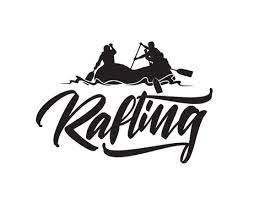

Overview
Purpose
The purpose of the White water rafting is to create a dynamic unique experience,engaging our clients to promote our exhilarating rafting adventures. By harnessing the power of the digital landscape, we aim to achieve the following objectives: Market Leadership: The oportunity to aspire in self love as a prominent player in the water rafting industry by showcasing our thrilling adventures, stunning destinations, and unrivaled expertise. Customer Connection: Our online presence is designed to foster meaningful connections with adventure enthusiasts, enabling us to share captivating testimonials, imagery, and videos that resonate with our audience. Effortless Booking: We're committed to simplifying the booking process by implementing an intuitive online reservation system, ensuring that customers can effortlessly plan their dream rafting experiences. Education and Trust: Through our website, we provide invaluable educational resources about rafting safety and equipment, reinforcing our commitment to safety and building trust among potential customers. Responsive Support: Our online customer support channels ensure that inquiries are promptly addressed, assisting customers in every step of their rafting journey. Brand Excellence: We cultivate a strong, consistent online brand presence that embodies the spirit of adventure and professionalism, setting us apart in a fiercely competitive industry. Data-Driven Decision Making: Leveraging web analytics tools, we collect valuable data on website traffic and user behavior to refine our marketing strategies and enhance the customer experience. Global Accessibility: We're dedicated to making information about our rafting adventures accessible to potential customers worldwide, ensuring they can access our services at any time. Operational Efficiency: Our online tools and systems streamline administrative tasks, allowing us to focus on delivering exceptional rafting experiences while optimizing behind-the-scenes operations.
Audience
Customer Profile: Our target audience comprises adventure enthusiasts and nature lovers who seek thrilling experiences in the great outdoors. They typically fall into the age range of 25 to 45, are financially stable with a moderate to above-average income, and have a strong interest in outdoor activities and exploration. Many of them are urban professionals looking to escape the daily grind and immerse themselves in nature's beauty. What They Want: They are looking for adrenaline-pumping adventures and a break from routine life. They seek the rush of white-water rafting, the tranquility of scenic river trips, and the opportunity to create lasting memories with friends and family. They value safety, expertise, and a well-organized experience. What They Expect to Find/Questions Answered: When accessing our website, they expect to find detailed information about our rafting adventures, including trip itineraries, safety measures, equipment provided, and booking options. They want to know about the skill level required for each trip and the suitable age groups. They seek pricing information, availability, and customer reviews to build trust in our services. Unmet Needs: While there are other rafting companies in the market, our audience often feels that some do not provide enough detailed information or personalized customer support. They may be looking for a more informative and customer-centric experience.
Branding
Website logo
Style Guide
Color Palette
Typography
Headings Example Font
Normal Text/Paragraph Example Font
Font: Roboto Font Style: sans-serif
Colored Callout Example Font
Font: Josefine Sans Font Style: sans-serif
Navigation
Wireframes
Home Page Wireframe

About Us Page Wireframe